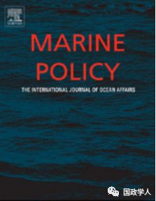
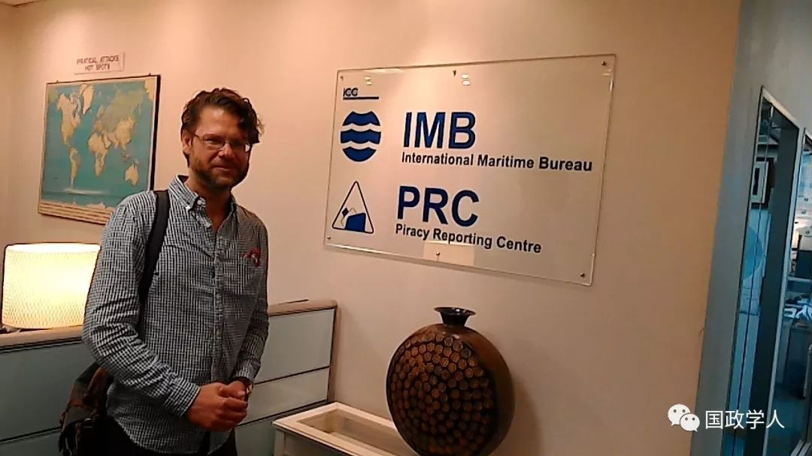
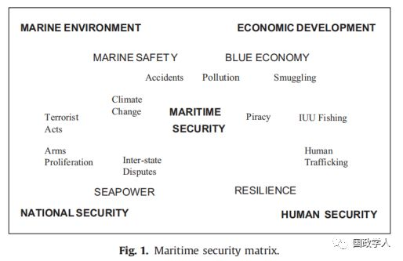
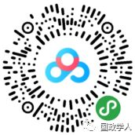

收录于合集

简 介
【 作者 】
克里斯蒂安·布格（Christian Bueger），哥本哈根大学政治学系国际关系学教授，同时也是塞舌尔大学的名誉教授，研究领域是国际组织、安全研究、国际政治社会学和国际实践理论，最近的研究主要聚焦海洋安全和社会学领域。
【 编译 】 邢 戎
【 审校 】丁伟航、李 甜
【 来源 】Christian Bueger, What is maritime security? Marine Policy 53 (2015) 159–164.
【 期刊介绍 】

Marine Policy（SSCI），是海洋政策研究的顶尖期刊，与制定海洋政策有关的海洋经济、海洋地理、国际法、国际政治等多学科的研究成果，海洋事务的最新发展和研究情况。内容涵盖：国际、区域和国家的海洋政策、渔业和航运等海洋活动的安排、海上冲突的解决、海洋生态环境、海洋资源利用等。
核心观点
海洋安全（maritime security）是一个热门的学术概念，但对于如何定义海洋安全尚未达成国际共识。基于现有的学界共识与分歧，作者致力于提供三种分析框架。
首先，运用 “符号学”的方法，在与其他相关概念组成的关联矩阵中认识海洋安全。
第二，运用 “安全化”理论框架研究海上威胁是如何产生的，以及为了不同的政治利益和意识形态利益应采取怎样不同的政治主张。
第三，观察行为体的 “安全实践”，即其在加强海洋安全过程中的实际行动。

克里斯蒂安·布格（Christian Bueger）
文章导读
** ** 一、定义海洋安全：重要的仅仅是涵义吗？****
2004年，美国率先发表国家海洋安全战略报告，随后，北约、英国、欧盟、非盟等行为体也纷纷发布海洋安全战略。如果说海上恐怖主义还仅仅是处于想象中的虚拟威胁，那么2008-2011年索马里海盗的猖狂则给了现实沉重一击。除了非传统安全，世界诸多海域（如北冰洋、中国东海、中国南海）中的国家间紧张态势也在蔓延。一些新兴国家（如中国和印度）对于建设“蓝水海军”的大力投资，更使得海洋安全空间备受关注。
有学者从威胁的角度来反向定义海洋安全， 海上威胁包括国家间的海洋争端、海上恐怖主义、毒品走私、贩卖人口、武器扩散、非法捕捞、生态环境破坏以及海上意外、海难等。但这一方法既没有突出重点，也没有解答这些威胁是如何相互联系的，更没有提供判断威胁是否属于海上领域的依据。 另有一种观点将海洋安全定义为稳定的良好的海洋状态。 然而对于怎样是好的却鲜有阐述，只是对于提高海洋执法力度和海洋经济做出相关研究。
作者运用战略研究的相关方法（一是符号学，二是安全化理论，三是安全实践）试图理清学术界的共识和分歧，对海洋安全概念的阐发做出进一步研究。
** ** ** 二、海洋安全相关概念的关联矩阵******
根据符号学的理论，一个概念是通过与邻近概念之间关系的共性和个性来定义的。那么至少有四个概念与海洋安全息息相关：海权（ seapower）、海事安全（marine safety）、海洋经济（blue economy）和人的韧性（human resilience），分别指明了海洋安全的四种解读维度。
海权极力强调海军的作用。 和平时期，军舰通过威慑、监测以及封锁等手段来促进海上贸易和经济繁荣。海权概念表明，海军是海洋安全的重要行为体，同时提出一个重要问题：海军航行能够超过领海多远的范围，在国际公海上显示军事存在。
海事安全指民事船只和海上设施的安全性。 海事安全越来越多地与海洋安全联系在一起，因为航运公司及其雇员会成为被海盗、恐怖分子等犯罪人员攻击的潜在目标以及实施犯罪的潜在肇事者。
海洋经济也与海洋安全息息相关，因为安全的海洋环境为管理海洋资源提供了先决条件，是海洋可持续发展战略的重要保障。 海洋经济概念的两个核心层面——粮食安全和沿海人口的韧性——直接指向了与海洋安全有关的第四个概念，即人类安全。人类安全以人而不是国家为中心来思考安全问题，非法捕捞活动是影响人类安全的一个重大问题。

** ** ** ** 三、解构威胁：安全化的分析框架********
第二种分析框架来自建构主义安全研究中的“安全化”分析框架（The securitization framework），这是由奥利·维夫和巴里·布赞提出的。他们认为威胁建构是有逻辑可循的， 一个威胁被解构的过程也就是安全化的过程。威胁建构通常伴随着政策建议，即采取措施来应对和解构威胁。这种措施往往是极端的，它们可能涉及军事手段，包括大规模军事冲突以及严重损害公民自由。
用安全化框架来理解海洋安全有两种分析路径。 首先，认为海洋是一个不安全空间的认识是如何形成的，又是如何随时间变化的，用家谱式的回溯来解释海洋作为一个充满不确定性的危险地带的发展过程。第二，用细粒度的分析来研究不同的议题是如何被“安全化”从而形成海洋安全问题。
安全化意味着被视为紧迫的优先事项，会有更多资源投入。 因此，海洋问题的安全化提高了海洋问题的地位。但另一方面，安全化本身也有一个独特的逻辑，即通常需要采取极端措施，并偏好短期反应，其结果可能是错误的投资，或者偏爱代价高昂的短期解决方案（例如动用军队）。这种情况已经在移民的例子中得到了印证。把移民视为安全威胁破坏了对人道主义的了解，往往导致采取极端的边界管制措施，造成的人道主义悲剧。
** ** ** ** 四、安全实践与安全共同体********
安全实践的视角试图思考的是：当行为体维护海洋安全时，他们有哪些实践活动。 这些实践活动首先是海域感知能力，这包括通过雷达、卫星或跟踪数据进行监视，以及通过数据库和服务中心共享和融合这些信息；第二是巡逻、封锁、海上搜寻等活动；第三是一些执法活动比如起诉、逮捕、审判、移交嫌疑人等；第四是各级别的协商会议、对不同标准、程序的协调以及任务或战略的制定和执行。第五是其他实践活动，比如海军外交、海上能力建设、还有海战（是否属于海洋安全存在争议）。
海洋安全实践研究包括两种不同视角： 一种是常规的海洋安全实践，行为体运用独特的实践将海洋安全的意义毫无争议地加以解决和制度化。另一种是存在争议的，以海洋安全名义开展的一系列活动。比如海战、海军外交、海上力量建设等实践可能属于其他意义领域（战争、外交、发展，而不仅仅是海洋安全）。研究这些存在争议的实践活动，可以看出行为体是如何界定海洋安全的。
在国家层面上，海洋安全需要多机构协同， 它涉及到军地协调，因为海军行动和民事行动之间无法明显的区分；还涉及到一些监管机构，包括运输、渔业、贸易、法律部门，以及岸防、港口、边防部队，还有警察、情报等部门；还涉及到政府、渔业公司、渔民、资源企业以及私营的海洋安全提供方。而超越国家层面来看，海洋安全则是一个跨国问题。这是因为海洋安全威胁具有国际化的影响，在复杂的全球航运和贸易中，任何单一的操作都会牵扯到不同国家的公民和司法管辖区。
海洋安全共同体的概念描述了所有相关行为体之间的一种理想化的合作形式。 行为体每天都参与其中，识别威胁、分享信息、协调活动、制定措施。海洋安全共同体概念是对安全共同体概念的借鉴和具象表达。按照一体化理论家卡尔·多伊奇的理论，安全共同体是一种政治合作形式，其主要特征是共同体成员之间没有战争，和平解决冲突，互信和集体认同感的增强，而北约和欧盟就是安全共同体的样板。海洋安全共同体的概念是对安全共同体的思考和进一步发展。安全共同体是与联盟不同的一种独特的安全治理形式，是关于如何识别不同的威胁以及如何共同应对这些威胁。促使安全共同体发展壮大的不是正式条约公报，而是日常的海上行为，主要涉及的是中下层海事安全从业人员。
** ** ** ** 五、结论********
海洋安全尚无明确的定义，其含义取决于行为体：行为体以海洋安全的名义进行什么活动，什么概念就会被引入海洋安全定义当中，费力探寻一个能被广泛接受的定义是注定徒劳无功的。作者提供了三种视角来理清海洋安全的含义，还为正在出现的“海洋安全研究”学科描绘框架，阐述了其与经济学、发展研究、环境研究和全球治理研究等学科的联系。
扫描下方小程序码查看原文p df

本文由国政学人微信公众平台编译首发
更多阅读
【地区秩序】阿米塔夫·阿查亚：权力转移还是范式变化？中国崛起与亚洲新兴安全秩序 | 国政学人
国政学人 （ID：guozhengxueren)
为方便学人及时阅读高质量文章
别忘把国政学人设置 星标 哦~